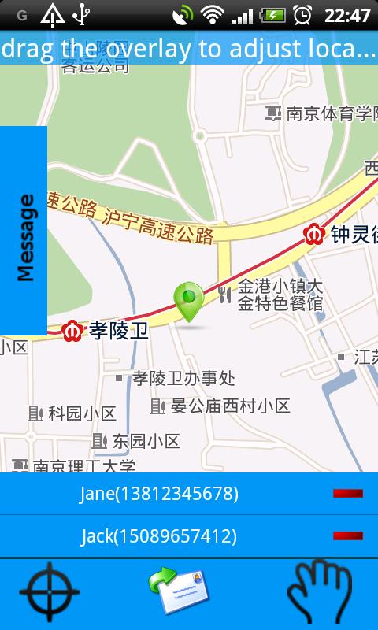

Four steps to report a location:
- Select contacts to send your location to.
- Select a postion on the map by moving the marker.
- Write a message which will be sent out with the location.
- click the sent button in the middle of the down panel to sent a SMS to the persons you picked at the first step.
Up to now, a report has been sent to some persons.
The sent reports can be viewed and processed in history
page.